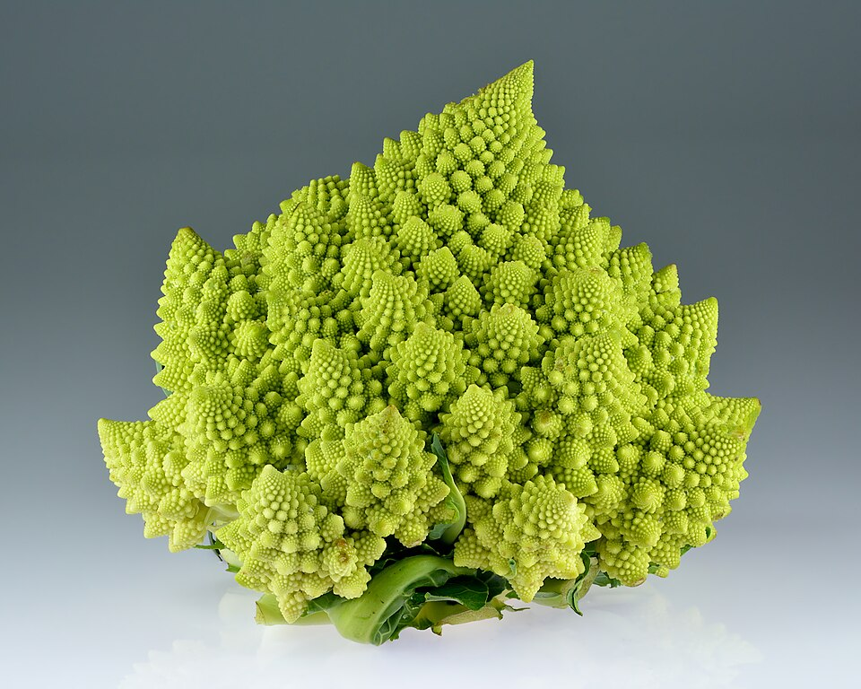

3 → 9 → 27 → 81 → 243 — one triangle, copying itself
A snowflake's edge can grow forever — while its area settles down to exactly 8/5 of where it started
Zoom in on a fern leaf: it's built from tiny fern leaves
Those three lines are fractal geometry in action. The first is the counting pattern of the most famous fractal ever drawn — a triangle that keeps replacing itself with smaller copies, tripling every round. The second sounds impossible — an edge that grows without end, wrapped around an inside that converges to one exact, modest number — and in this lesson you won't just believe it, you'll PROVE it. The third is nature's favorite building trick: make a big thing out of small copies of itself.
Why do people care? Because fractals are hiding everywhere you look. Ferns, trees, broccoli, snowflakes, lightning bolts, river networks, coastlines, even the branching airways inside your lungs — all are built from the same pattern repeated at smaller and smaller scales. Movie studios use fractal rules to draw mountains and clouds that look real. Doctors use them to understand blood vessels. And mathematicians love fractals because one tiny rule, repeated forever, can create endless, beautiful complexity out of almost nothing.
A fair warning: this lesson goes much further than most. You'll work with powers like (4/3)ⁿ, turn repeating rules into explicit formulas, sum infinite geometric series, solve equations with logarithms, and finish by computing EXACT fractal dimensions — numbers like 1.585 that live between dimensions. Nothing here is magic: every step is shown, with the reason for each move written next to it. Hard just means "takes more than one step."
In this lesson, you will:
- 1.Learn the zoom test — and what exact self-similarity means
- 2.Turn a repeating rule into a formula: geometric sequences, series, and function composition
- 3.Build the Koch snowflake — and prove its edge is infinite while its area is exactly 8/5 of the original
- 4.Build the Sierpinski triangle — and track its area, its holes, and its surprisingly infinite perimeter
- 5.Master logarithms and compute fractal dimensions — numbers between dimensions
- 6.Measure coastlines with math: why the answer depends on your ruler, and by exactly how much
- 7.Explore the big paradoxes — now with proofs instead of promises
- 8.Learn the common mistakes so you never make them
- 9.Review the big picture — then practice with 100 problems at the end!
How to use this lesson: Read the sections in order — each one builds on the one before it, and every new term is defined the moment it appears. Take your time, and try every "Your Turn" box with a pencil and paper. Drawing the stages makes everything easier — fractals are meant to be doodled! Ready? Let's go!
📸 Pictures

Romanesco broccoli: each bump is made of smaller bumps that look like the whole thing. It's a fractal you can eat! See source ↓

The Mandelbrot set, the most famous fractal of all. You can zoom into its edge forever and keep finding new swirls! See source ↓
🗺️ Your lesson map
What Is a Fractal? — The Zoom Test 🧩Lesson 2
The Recipe — One Rule, Repeated (and the Formula That Captures It) 🎯Lesson 3
The Koch Snowflake — The Edge That Never Stops (and the Area That Does) 🔍Lesson 4
The Sierpinski Triangle — The Great Disappearing Act (With Infinite Perimeter!) ⚡Lesson 5
The Dimension Secret — Now With Logarithms 🌟Lesson 6
Fractals All Over Nature — And Why (Plus: the Coastline Formula) 🛠️Lesson 7
The Big Paradoxes — Now Proven ⚠️Lesson 8
Watch Out! Common Mistakes 🧠Lesson 9
Review — The Big Picture 🏋️Practice Problems
100 problems to try 🏆Quiz
Test yourself: new questions every time!
📚 Picture Sources
- Picture 1 · Romanesco broccoli (Brassica oleracea). By Ivar Leidus. CC BY-SA 4.0. From Wikimedia Commons: https://commons.wikimedia.org/wiki/File:Romanesco_broccoli_(Brassica_oleracea).jpg
- Picture 2 · Mandel zoom 00 mandelbrot set. By Wolfgang Beyer (made with Ultra Fractal 3). CC BY-SA 3.0. From Wikimedia Commons: https://commons.wikimedia.org/wiki/File:Mandel_zoom_00_mandelbrot_set.jpg
.jpg){kind=link}